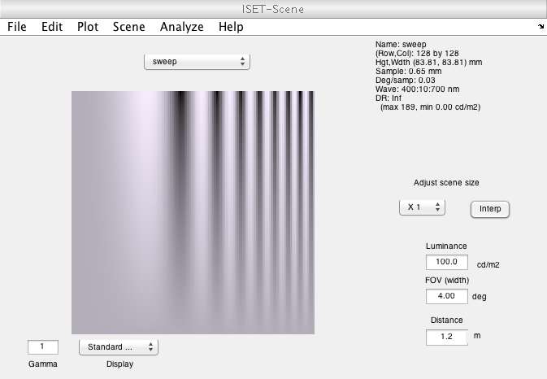
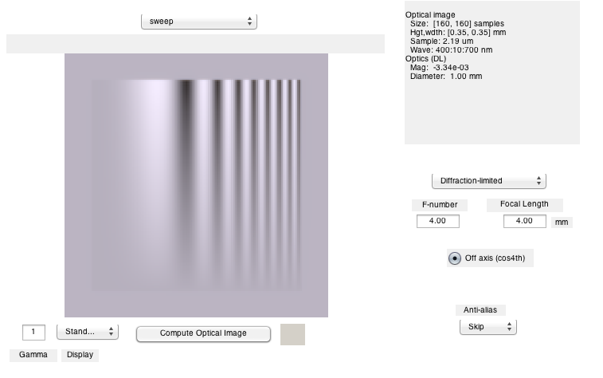
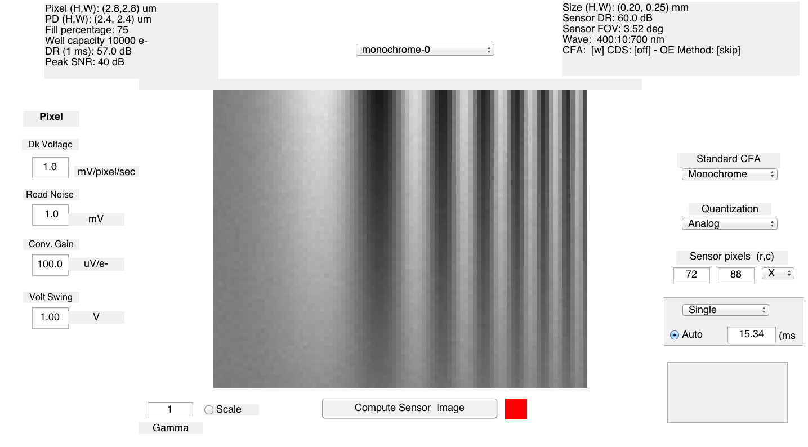
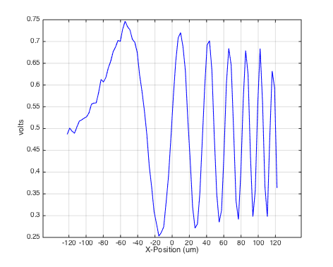
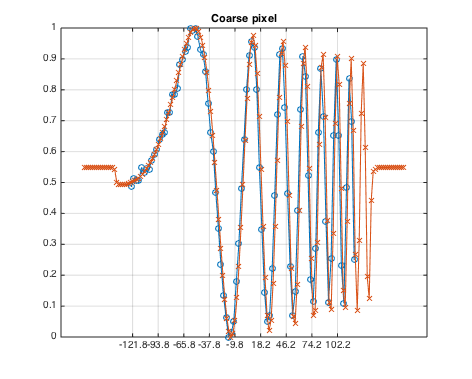
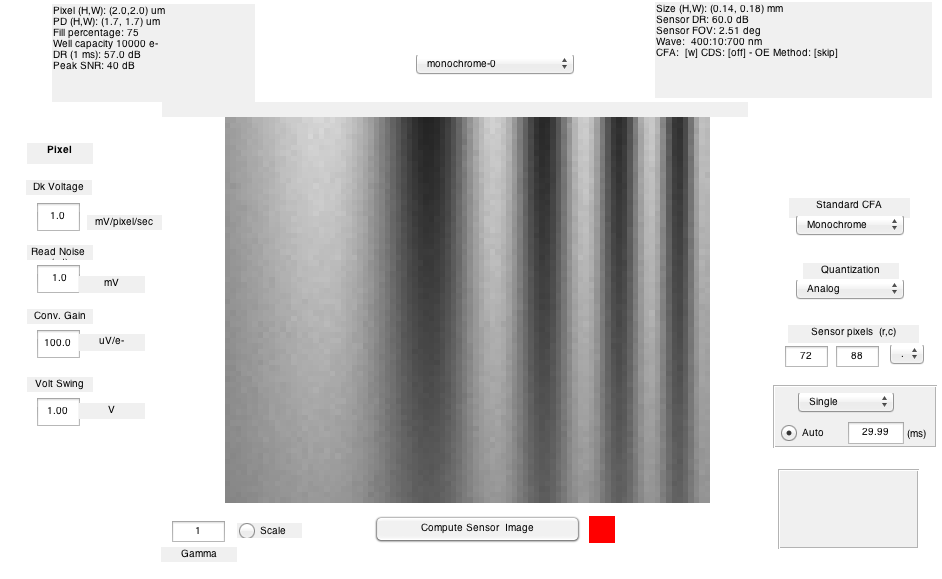
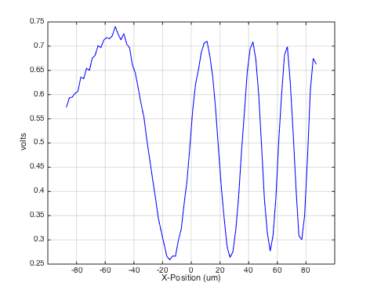
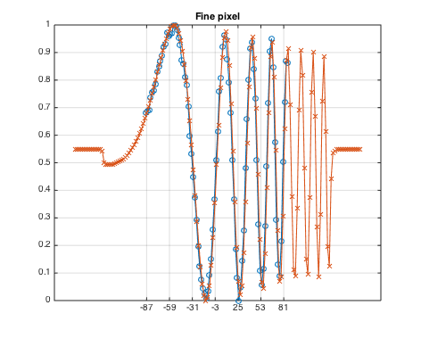

t_sensorSpatialResolution
Compare the optical image and sensor spatial samples
This script is is a tutorial that is meant to be run by evaluating a few lines at a time and studying the outputs.
The script creates a sweep frequency scene. The scene is imaged through the optics to form an irradiance image. That image is then measured by a sensor.
This script plots a horizontal line through the middle of the optical image and sensor are plotted and compared with one another on a common axis.
This script can be modified to illustrate the effects of undersampling (aliasing).
Copyright ImagEval Consultants, LLC, 2005.
Contents
- Initialize
- Create a scene with a simple test pattern and put it in the scene window
- Create an optical image and put it in the optical image window
- Create a monochrome sensor, and compute the voltage response
- To see the sensor image in a GUI, use this
- lot the optical image and the voltage response on a common spatial scale.
- Generate the optical image plot for illuminance
- Create a monochrome sensor with smaller pixels
- End
Initialize
s_initISET;
Create a scene with a simple test pattern and put it in the scene window
scene = sceneCreate('sweepFrequency'); % You can set the field of view in a variety of ways to alter the spatial % scale of the resulting optical image scene = sceneSet(scene,'fov',4); % To see the scene in a GUI, use this: vcAddAndSelectObject(scene); sceneWindow;
Create an optical image and put it in the optical image window
oi = oiCreate; optics = oiGet(oi,'optics'); optics = opticsSet(optics,'fnumber',4); optics = opticsSet(optics,'focalLength',0.004); oi = oiSet(oi,'optics',optics); oi = oiCompute(scene,oi); % To see the optical image in a GUI, use this: vcAddAndSelectObject(oi); oiWindow;
Create a monochrome sensor, and compute the voltage response
val = vcGetSelectedObject('isa'); sensor = sensorCreate('monochrome'); sensor = sensorCompute(sensor,oi);
To see the sensor image in a GUI, use this
vcAddAndSelectObject(sensor); sensorImageWindow;
lot the optical image and the voltage response on a common spatial scale.
First, generate a plot of the voltage across the pixels on the sensor, saving the data in sData. Choose the middle row.
row = sensorGet(sensor,'rows'); row = round(row/2); [g sData] = sensorPlotLine(sensor,'h','volts','space',[1,row]);
Generate the optical image plot for illuminance
row = sceneGet(oi,'rows'); row = round(row/2); oData = oiPlot(oi,'horizontallineilluminance',[1,row]); % One set of data is in volts and the other in illuminance. Normalize them % to a common 0,1 range sData.normData = ieScale(sData.data,0,1); oData.normData = ieScale(oData.data,0,1); % Now plot the two curves on the same spatial scale, remembering that the % pixel position is in the middle. That is why we take away 1/2 of the % pixel width from the pixel position pSize = pixelGet(sensorGet(sensor,'pixel'), 'width','microns'); plot(sData.pos - pSize/2,sData.normData,'-o', oData.pos,oData.normData,'-x'); % Here are tick marks at the 10x pixel width. % To see this at the pixel width, set xSpacing to pSize. % Then you will have to zoom in on part of the image % % Notice the spatial aliasing xSpacing = 10*pSize; xtick = min(sData.pos):xSpacing:max(sData.pos); set(gca,'xtick',xtick); grid on title('Coarse pixel')
Create a monochrome sensor with smaller pixels
Compute the voltage response
pixel = sensorGet(sensor,'pixel'); pixel = pixelSet(pixel,'size Constant Fill Factor',[1,1]*2e-6); sensorSmall = sensorSet(sensor,'pixel',pixel); sensorSmall = sensorCompute(sensorSmall,oi); % To see the sensor image in a GUI, use this vcAddAndSelectObject(sensorSmall); sensorImageWindow; % Same plotting as above, note the end of the aliasing row = sensorGet(sensorSmall,'rows'); row = round(row/2); [g sData] = sensorPlotLine(sensorSmall,'h','volts','space',[1,row]); row = sceneGet(oi,'rows'); row = round(row/2); oData = oiPlot(oi,'horizontallineilluminance',[1,row]); sData.normData = ieScale(sData.data,0,1) oData.normData = ieScale(oData.data,0,1) pSize = pixelGet(sensorGet(sensorSmall,'pixel'), 'width','microns') plot(sData.pos - pSize/2,sData.normData,'-o', oData.pos,oData.normData,'-x') xtick = min(sData.pos):xSpacing:max(sData.pos); set(gca,'xtick',xtick); grid on title('Fine pixel')
sData =
pos: [1x88 double]
data: [1x88 double]
normData: [1x88 double]
oData =
pos: [1x160 double]
data: [160x1 double]
cmd: 'plot(pos,illum)'
normData: [160x1 double]
pSize =
2
  